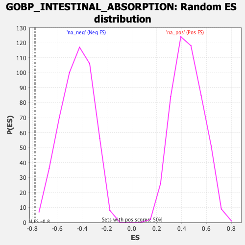

| | | Dataset | DE_genes |
| Phenotype | NoPhenotypeAvailable |
| Upregulated in class | na_neg |
| GeneSet | GOBP_INTESTINAL_ABSORPTION |
| Enrichment Score (ES) | -0.7786341 |
| Normalized Enrichment Score (NES) | -1.7600856 |
| Nominal p-value | 0.004 |
| FDR q-value | 0.12598848 |
| FWER p-Value | 0.87 |
Table: GSEA Results Summary
 Fig 1: Enrichment plot: GOBP_INTESTINAL_ABSORPTION
Fig 1: Enrichment plot: GOBP_INTESTINAL_ABSORPTION
Profile of the Running ES Score & Positions of GeneSet Members on the Rank Ordered List
| SYMBOL | RANK IN GENE LIST | RANK METRIC SCORE | RUNNING ES | CORE ENRICHMENT | | 1 | AKR1C1 | 413 | 80.344 | 0.0497 | No |
| 2 | SLC26A6 | 3964 | 6.441 | -0.2490 | No |
| 3 | CEL | 5010 | 3.825 | -0.3348 | No |
| 4 | IREB2 | 5798 | 2.514 | -0.3999 | No |
| 5 | UGCG | 6960 | -3.665 | -0.4959 | No |
| 6 | VDR | 7578 | -4.960 | -0.5438 | No |
| 7 | LDLR | 9400 | -13.454 | -0.6862 | No |
| 8 | EPB41 | 10475 | -30.629 | -0.7461 | Yes |
| 9 | F11R | 10737 | -40.037 | -0.7261 | Yes |
| 10 | CD36 | 10776 | -41.464 | -0.6854 | Yes |
| 11 | TJP2 | 10905 | -48.224 | -0.6453 | Yes |
| 12 | ACO1 | 11018 | -54.699 | -0.5969 | Yes |
| 13 | EZR | 11104 | -60.065 | -0.5404 | Yes |
| 14 | LPCAT3 | 11400 | -103.703 | -0.4558 | Yes |
| 15 | PLS1 | 11419 | -111.412 | -0.3391 | Yes |
| 16 | SCARB1 | 11503 | -148.627 | -0.1886 | Yes |
| 17 | SLC46A1 | 11570 | -188.474 | 0.0057 | Yes |
Table: GSEA details [plain text format]

Fig 2: GOBP_INTESTINAL_ABSORPTION: Random ES distribution
Gene set null distribution of ES for GOBP_INTESTINAL_ABSORPTION